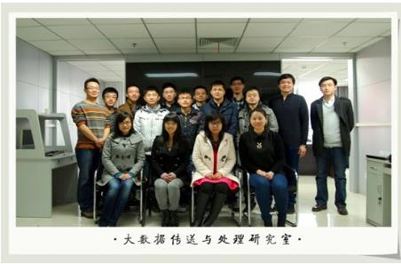

大数据传送与处理研究室
一 研究室负责人介绍
顾仁涛： 男，工学博士。承担《光传送与接入技术》和《Digital Circuit Design》等课程的教学工作。先后主持和参与了国家973计划、国家863计划、国家自然科学基金、广东省产学科研项目等多项省级部级以上研究项目。在本领域重要学术刊物和会议录用和发表SCI/EI检索论文20余篇，申请美国发明专利1项、国家发明专利19项。
主要研究方向： 网络智能信息处理技术
二 研究室成员
组长：魏培
成员：李丽君、岑翼、叶青、杨书茂、许艳红、张俊杰、李红梅、陈旭、沈达、马晓宁、王震、任乙广、周御峰、刘晓旭、胡汝伟、张士宗、金伟祺、郭通禄、葛钊志、王磊、张圆、何亮
